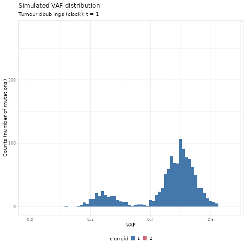
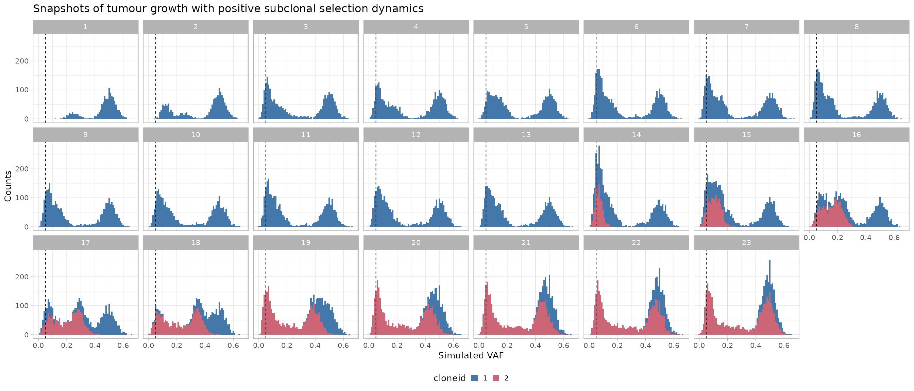
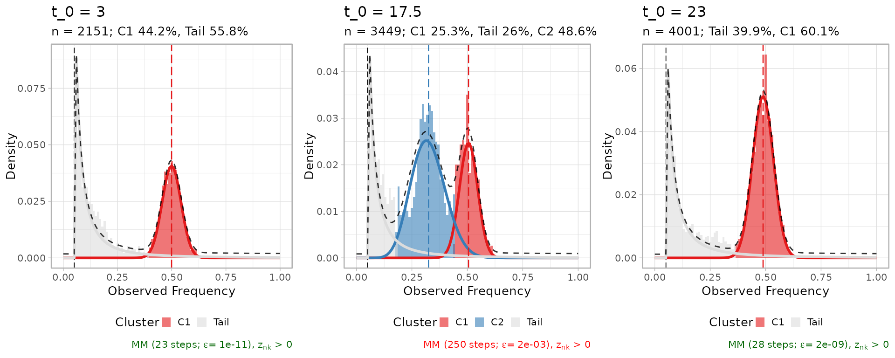

7. Visualizing subclonal expansions
Giulio Caravagna and Marc Williams
21 November, 2025
Source:vignettes/a7_Example_tumour_simulation.Rmd
a7_Example_tumour_simulation.RmdStochastic branching processes models of tumour growth describe cell division processes and the propagation of somatic alleles that accrue during tumour evolution.
In this RMarkdown, we use these population genetics models to visualise the joint effects of neutral evolution and positive selection on sequencing data of tumour’s Variant Allele Frequencies (VAFs).
You can generate similar dynamics using the R package Tumour Emulator (TEMULATOR) or the Julia package CancerSeqSim.
Simulated tumour growth
We have simulated a tumour with 2 clones. The tumours starts with the
ancestral clone at time t = 0, and the subclone with
increased positive selection relative to its ancestor
(),
emerging at time t = 9.
We load the simulation object simulationdata.Rdata.
library(mobster)
library(dplyr)
library(tibble)
library(ggplot2)
library(gganimate)
# Load input data from Marc
load('simulationdata.Rdata')
# Split by time point (`d` variable)
df.steps = split(df, f = df$d)
# Integer times
t_integers = df$d %>% round() %>% unique %>% sort
df = df %>%
as_tibble() %>%
filter(d %in% t_integers) %>%
mutate(cloneid = paste0(cloneid))
print(df %>% as_tibble)
#> # A tibble: 70,474 × 6
#> VAF trueVAF cloneid cloneVAF d popsize
#> <dbl> <dbl> <chr> <dbl> <dbl> <dbl>
#> 1 0.496 0.5 1 0 1 1
#> 2 0.459 0.5 1 0 1 1
#> 3 0.496 0.5 1 0 1 1
#> 4 0.5 0.5 1 0 1 1
#> 5 0.463 0.5 1 0 1 1
#> 6 0.460 0.5 1 0 1 1
#> 7 0.484 0.5 1 0 1 1
#> 8 0.474 0.5 1 0 1 1
#> 9 0.491 0.5 1 0 1 1
#> 10 0.505 0.5 1 0 1 1
#> # ℹ 70,464 more rowsWe first use gganimate to create a GIF of the simulated
data.
ani = df %>%
as_tibble() %>%
mutate(cloneid = paste0(cloneid)) %>%
ggplot(aes(x = VAF, fill = cloneid)) +
geom_histogram(binwidth = 0.01) +
gganimate::transition_states(
d,
transition_length = 2,
state_length = 2
) +
gganimate::ease_aes('cubic-in-out') +
ylab("Counts (number of mutations)") +
labs(
title = 'Simulated VAF distribution',
subtitle = 'Tumour doublings (clock): t = {closest_state}'
) +
ggthemes::scale_fill_ptol() +
mobster:::my_ggplot_theme()
gganimate::animate(ani,
width = 480,
height = 480,
units = "px",
res = 72,
nframes = 100,
renderer = gganimate::magick_renderer())
The time units of the plot are genome doublings. We have
simulate Poisson-distributed whole-genome sequencing (WGS) data
at 120x median depth, and perfect tumour purity
(100%). These parameters affect the observable dynamics;
here the subclone is visible after t = 14 doublings, and
sweeps completely at t = 19.
We can plot the data distribution at each of a discrete set of time-points.
df %>%
ggplot(aes(x = VAF, fill = cloneid)) +
geom_histogram(binwidth = 0.01) +
theme_light() +
facet_wrap( ~ d, nrow = 3) +
geom_vline(xintercept = 0.05,
linetype = 'dashed',
size = .3) +
labs(
title = 'Snapshots of tumour growth with positive subclonal selection dynamics',
y = "Counts",
x = 'Simulated VAF'
) +
CNAqc:::my_ggplot_theme() +
ggthemes::scale_fill_ptol()
WGS data are simulated independently at each time-point, and the VAFs at each point are therefore uncorrelated. The monoclonal ancestral population is dark blue; mutations in the new subclone plus the hitchikkers are coloured in purple.The dynamics of the tumour span from time t=0 to
t=23; the subclone is undetectable before
t=14, and has sweeped through at the end of the
simulation.
MOBSTER fits
We capture the dynamics (fit and plot) with a snapshot function
snap.
snap = function(data, t, ...)
{
x = data[[t]]
x = x[x$VAF > 0.05,]
time_label = paste0('t_0 = ', x$d[1])
# Ellipsis to get what fits we want
f = mobster_fit(x, description = time_label, ...)$best
return(list(fit = f, plot = plot(f) + labs(title = time_label)))
}
# Initial clone (monoclonal)
initiation = snap(data = df.steps, t = 5, K = 1, samples = 1, parallel = FALSE)
#> [ MOBSTER fit ]
#>
#> ✔ Loaded input data, n = 2151.
#> ❯ n = 2151. Mixture with k = 1 Beta(s). Pareto tail: TRUE and FALSE. Output
#> clusters with π > 0.02 and n > 10.
#> ❯ Custom fit by Moments-matching in up to 250 steps, with ε = 1e-10 and peaks
#> initialisation.
#> ❯ Scoring (without parallel) 1 x 1 x 2 = 2 models by reICL.
#> ℹ MOBSTER fits completed in 641ms.
#> ── [ MOBSTER ] t_0 = 3 n = 2151 with k = 1 Beta(s) and a tail ──────────────────
#> ● Clusters: π = 56% [Tail] and 44% [C1], with π > 0.
#> ● Tail [n = 1156, 56%] with alpha = 1.2.
#> ● Beta C1 [n = 995, 44%] with mean = 0.5.
#> ℹ Score(s): NLL = -1885.56; ICL = -3543.5 (-3725.09), H = 181.58 (0). Fit
#> converged by MM in 23 steps.
# Ongoing subclonal expansion (polyclonal)
selection = snap(data = df.steps, t = 34, K = 2, samples = 1, parallel = FALSE)
#> [ MOBSTER fit ]
#>
#> ✔ Loaded input data, n = 3449.
#> ❯ n = 3449. Mixture with k = 2 Beta(s). Pareto tail: TRUE and FALSE. Output
#> clusters with π > 0.02 and n > 10.
#> ❯ Custom fit by Moments-matching in up to 250 steps, with ε = 1e-10 and peaks
#> initialisation.
#> ❯ Scoring (without parallel) 1 x 1 x 2 = 2 models by reICL.
#> ℹ MOBSTER fits completed in 13.8s.
#> ── [ MOBSTER ] t_0 = 17.5 n = 3449 with k = 2 Beta(s) and a tail ───────────────
#> ● Clusters: π = 49% [C2], 26% [Tail], and 25% [C1], with π > 0.
#> ● Tail [n = 805, 26%] with alpha = 1.2.
#> ● Beta C1 [n = 967, 25%] with mean = 0.51.
#> ● Beta C2 [n = 1677, 49%] with mean = 0.33.
#> ℹ Score(s): NLL = -2141.74; ICL = -3177.42 (-3783.36), H = 1032.76 (426.82).
#> Fit interrupted by MM in 250 steps.
# Sweeped clone (monoclonal)
sweep = snap(data = df.steps, t = length(df.steps), K = 1, samples = 1, parallel = FALSE)
#> [ MOBSTER fit ]
#>
#> ✔ Loaded input data, n = 4001.
#> ❯ n = 4001. Mixture with k = 1 Beta(s). Pareto tail: TRUE and FALSE. Output
#> clusters with π > 0.02 and n > 10.
#> ❯ Custom fit by Moments-matching in up to 250 steps, with ε = 1e-10 and peaks
#> initialisation.
#> ❯ Scoring (without parallel) 1 x 1 x 2 = 2 models by reICL.
#> ℹ MOBSTER fits completed in 1.4s.
#> ── [ MOBSTER ] t_0 = 23 n = 4001 with k = 1 Beta(s) and a tail ─────────────────
#> ● Clusters: π = 60% [C1] and 40% [Tail], with π > 0.
#> ● Tail [n = 1530, 40%] with alpha = 1.1.
#> ● Beta C1 [n = 2471, 60%] with mean = 0.49.
#> ℹ Score(s): NLL = -3417.33; ICL = -6427.2 (-6784.89), H = 357.69 (0). Fit
#> converged by MM in 28 steps.
cowplot::plot_grid(initiation$plot, selection$plot, sweep$plot, nrow = 1)
Notice that the tail at the end of the simulation is now mostly dominated by the progeny of the most recent clone, and the amount of mutations in the tail and the clonal cluster is balanced as in the beginning of the simulation. This because in this simulation the mutation rate of the tumour is the same across all simulated clones.